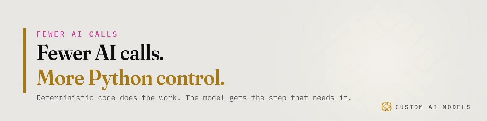
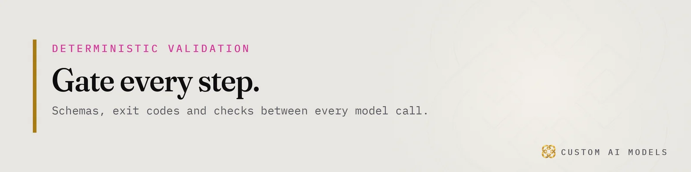
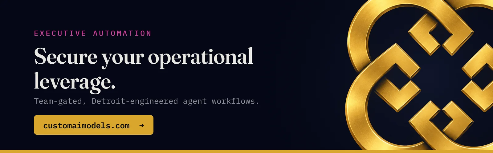

Custom AI Models
Custom AI Models Yeriko Vargas · Founder, Custom AI Models · Oct 2026
Yeriko Vargas · Founder, Custom AI Models · Oct 2026Short answer. Companies use AI to get clients in three places: search, where AI engines name them; outreach, where a pipeline drafts and sends messages; and response, where an assistant answers new leads fast. The model is one stage in each. Clean data and deterministic checks decide whether a client signs.
How do companies use AI to get clients?
Companies use AI to get clients in three places: search, where AI engines name them; outreach, where a pipeline drafts and sends messages; and response, where an assistant answers new leads fast. The model is one stage in each. The data and the checks around it decide whether a client signs or a lead walks away.
You have seen the demo version. It wrote a clean cold email, then invented a detail about the prospect. That is the normal first result. Everything after it is plumbing.
- Search: AI answer engines pick a few businesses to name. Your pages get lifted or they don't.
- Outreach: a Python pipeline reads lead records, drafts messages, and sends only what passes its checks.
- Response: an assistant answers inbound questions in minutes, from your own data, inside rules you set.
Each of these is a pipeline. Webhooks bring leads in. SQL holds the record. A model drafts. Code decides what ships. Skip any link in that chain and the system starts talking to people it should never have touched.

Why does AI outreach fail on a messy CRM?
AI outreach fails on a messy CRM because the model writes from whatever the record says. Duplicate contacts, stale job titles and missing opt-out flags become confident, wrong messages. Unify the lead data first: one record per person, one source of truth for stage, one field for who may be contacted. Then the model has something true to write from.
Leads arrive from web forms, inboxes, calendar invites and old spreadsheets. Each source names the same person differently. Merge them before anything else. The order is laid out in Your AI didn't fail. Your data did., and What replacing four spreadsheets actually took shows what the merge costs in real work.
A usable lead record carries a short list of fields:
- A stable ID that survives every merge.
- Source and timestamp for each touch.
- Consent and suppression status.
- Current stage, set by code or by a person.
- The last human who spoke to them.
Boring? Yes. It is also the part that keeps an assistant from becoming a legal and financial liability.
What should the model decide, and what should code decide?
Code decides who qualifies, who gets contacted, when a message may go out and who is suppressed. The model decides wording, summarizes replies and sorts intent. Anything with a right answer belongs to code. Anything that needs language belongs to the model. Mixing the two is how an agent emails someone who opted out last week.
In a Python pipeline the model is a function call. A script can call claude -p for one drafting step, take the output, and treat it as a claim. The next step checks that claim against the record. This is the line described in The model is a stage. The program is the system., and Twelve tools, one Python pipeline shows how the calls are wired.
Custom AI Models builds in one order. Unify the data, model it, gate every step, and put the model last. Founders who start at the last step spend the month cleaning up the first three.

Gate every step before a message reaches a prospect
A deterministic validation gate is a check written in code that returns pass or fail through an exit code. Before an AI-drafted message reaches a prospect, it must clear the gate. A failing gate stops the send, logs the reason and routes the draft to a person. No gate, no send.
Stack the gates in a fixed order:
- Schema: the draft arrives as JSON with required fields, or it is rejected.
- Claim check: every fact in the draft must match a field in the lead record.
- Suppression: opted-out contacts and current clients are removed by SQL, never by the model.
- Send rules: code enforces the window and the rate.
- Approval: a person reads the first batch of any new campaign.
RBAC decides which teammate can approve a send. That matters once more than one person touches the pipeline.
Then watch it. Telemetry on every stage shows where drafts get rejected and why. Data drift in the CRM shows up there first: a field changes meaning, the gate trips, and the model never knew. Agents make this worse before they make it better covers what breaks in the first month.
How do you get named when buyers ask an AI?
Buyers now ask an AI engine who to hire, and it names a few businesses. To be named, a page needs plain, specific passages the engine can lift: a direct answer, named tools and steps, and one canonical URL. Visibility is a data job before it is a writing job.
Run the checklist in GEO vs SEO: verify this before you spend a dollar first. It tells you what to fix before any budget moves. For the mechanics of what engines read, see Engines cite pages they can lift. Make yours liftable.
Then close the loop. A visit from an AI answer should land in the same lead record as an outbound reply. One record, one pipeline, one set of gates. That is how search, outreach and response stop being three experiments and become one system you can measure.
Clients come from that system. Not from the model alone.
Questions people ask
Can AI find clients for my business without a salesperson?
AI can find leads, draft messages and answer inbound questions without a person at every step. Someone still owns the rules: who qualifies, what may be said, and who approves the first batch. Treat the model as a stage in a pipeline, and keep a human on approvals.
What data do I need before building an AI lead pipeline?
You need one unified lead record: a stable ID, source, consent status, stage and last human contact. Pull it from forms, inboxes and spreadsheets into one table. If two sources disagree about who someone is, the model will write to both versions of them.
What breaks first when AI contacts prospects?
Usually the facts. The model invents a detail, or the CRM holds a stale one, and the message goes out confident and wrong. A claim check that compares each statement to the lead record catches most of it. Suppression lists come second.
Who owns the pipeline once it is running?
One named person should own the gates and the telemetry, not the prompts. They review rejection logs, approve rule changes and decide who gets approval rights. Prompts change often. The checks around them should change on purpose, with a record of why.
